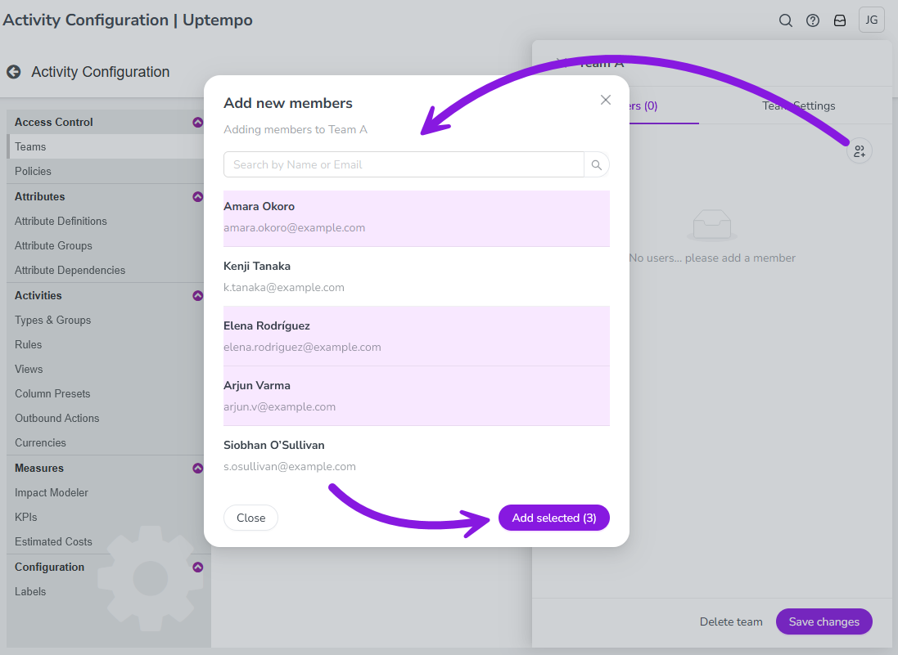

Manage access control with teams
To apply activity access controls to your Campaign Management users, you can create teams to manage multiple users as a single entity. When you assign a team to an access control policy, the policy's access permissions automatically extend to all users in the team.
Using teams to apply access controls helps you to save time and manual effort, reduces the risk of configuration errors, and makes ongoing maintenance easier. Whenever users join, leave, or change roles, you can adjust access by simply adding users to or removing them from teams, instead of modifying multiple access control policies.
Create new teams
By default, Campaign Management does not contain any teams. Before you can begin using teams to manage access control permissions, you must first create the teams you want to use. You can create as many teams as you need.
Add a new team
You can add a new team to Campaign Management at any time.
In the
 Activities section, click
Activities section, click  Settings.
Settings.In the Activity Configuration menu, click Access Control > Teams.
On the Teams page, click + Add Team. The New Team dialog opens.
Enter a name for the team in the Name field.
To finish creating the new team, click Create team.
The New Team dialog closes, and the newly created team is displayed in the list of teams.
You can now add users to the new team. Newly created teams are also immediately available for linking to access control statements.
Add or remove users in a team
Manage the members of a team to quickly grant or revoke access control permissions.
Add users to a team
You can add users to a team at any time to grant them the permissions defined by the team's linked access control policies.
In the
Activities section, click Settings.In the Activity Configuration menu, click Access Control > Teams.
On the Teams page, click on the team to which you want to add users. The team's details panel opens to the Members tab, which shows the team's current members.
On the Members tab, click Add members. The Add new members dialog opens.
In the Add new members dialog, click on a user in the list to select them:

Selected users are highlighted with a colored background.
You can select multiple users to add. The number of selected users is shown on the Add selected button.
Click Add selected to add the selected users to the team. The selected users are displayed on the Members tab.
To finish adding users, click Save changes.

The selected users are now members of the team and immediately receive the permissions linked to the team.
Remove users from a team
You can remove users from a team at any time to revoke the permissions that are granted by membership in the team.
In the
Activities section, click Settings.In the Activity Configuration menu, click Access Control > Teams.
On the Teams page, click on the team from which you want to remove users. The team's details panel opens to the Members tab, which shows the team's current members.
To remove a user from the team, click Remove member beside that user. The user is removed from the list on the Members tab.
Optional: Repeat step 4 to remove additional users.
To finish removing users, click Save changes.
The users are removed from the team, and the system immediately revokes all permissions linked to the team from the removed users.
Edit or remove teams
You can change any existing team's name, or delete a team if you no longer need it.
Rename a team
You can change any team's name at any time.
In the
Activities section, click Settings.In the Activity Configuration menu, click Access Control > Teams.
On the Teams page, click on the team which you want to rename. The team's details panel opens.
Enter a new name for the team into the Name field.
To apply the change, click Save changes.
The team's name change takes effect immediately.
Delete a team
You can delete any team at any time, including teams that still contain users and are still linked to access control policies.
In the
Activities section, click Settings.In the Activity Configuration menu, click Access Control > Teams.
On the Teams page, click on the team which you want to delete. The team's details panel opens.
In the details panel, click Delete team.
In the confirmation dialog, click Yes to finish deleting the team.
The team is deleted, and removed from the list of teams. Any remaining users are automatically removed from the team. The team is also removed from all policies to which it was linked.